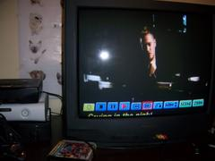

Saturn - Filmes, fotos e Saturno
 :::. Por Gigacom - Aqui o negocio todo era desconhecido, mas lá na Asia era o que havia de mais bacana em interatividade digital. Ver fotos da familia na TV e assistir filmes em CDs era comum por aquelas bandas antes mesmo do advento dos aparelhos de DVD. E o mais legal de tudo, é que o Saturn era capaz de exibir essas midias, claro que com uma certa maozinha...
:::. Por Gigacom - Aqui o negocio todo era desconhecido, mas lá na Asia era o que havia de mais bacana em interatividade digital. Ver fotos da familia na TV e assistir filmes em CDs era comum por aquelas bandas antes mesmo do advento dos aparelhos de DVD. E o mais legal de tudo, é que o Saturn era capaz de exibir essas midias, claro que com uma certa maozinha...
_______________________________________________________________________
Eu diria que o Saturn foi o resultado de um projeto que nasceu com um objetivo já definido, que era trazer jogos 2D com qualidade nunca antes vista, usando CDs ao invés de cartuchos. Mas como as coisas mudaram rapidamente nesse meio tempo, a Sega precisou dar um jeito de colocar mais memoria no console, pelo menos mais 2 processadores para lidar com gráficos 3D, e de quebra teve que se aliar com grandes fabricantes de eletronicos para ajudar a custear a produção do console.
Nessa aliança, as fabricantes sugeriram aos projetistas da Sega, a possibilidade de se expandir a capacidade do Saturn para que o console lêsse Photo CDs e VCDs. Colocaram as mãos na massa, e assim nasceu o VCD Card.
O VCD card era um add-on que podia ser facilmente instalado na porta de expansão interna do console. Bastava tirar a tampinha da baia interna, e encaixar a plaquinha. Simples desse jeito. Dessa forma, qualquer CD nos formatos citados acima, passavam a ser compativeis com o console, e eram executados com maestria pelo hardware do Saturn.
Houveram algumas versões desse add-on, que não passaram de uma atualização do formato VCD e Photo CD. O VCD Card nunca chegou oficialmente ao ocidente, ficando restrito apenas ao comércio asiático. Alguém pode achar estranho pois tanto o Photo CD quanto o VCD eram mais ou menos bem difundidos nos EUA e Europa, onde vários filmes eram publicados no formato, assim como várias empresas espalhadas nesses países ofereciam o serviço de digitalização de fotos e gravação delas em um Photo CD. Porém vale lembrar que o Saturn nunca se saiu tão bem nesses locais, e o lançamento de qualquer coisa que fosse para o console (inclusive vários jogos), significava por em risco o investimento sem muita certeza do retorno de algum lucro.
Não obstante, na Asia esse negocinho era bem famoso, e facil de encontrar. Muita gente que tinha um Saturn aproveitava essa funcionalidade do console, e assim economizava um espaço nos cubiculos (para quem não conhece, a maior parte das moradias do Japão são formadas por kitnetes, que não raro é tão apertado quanto um daqueles banheiros quimicos), ao invés de ter um video game e um leitor de VCD, ter apenas um aparelho que fizesse as duas coisas ao mesmo tempo.
Algumas versões do Saturn fabricadas por empresas como a JVC, Hitachi e Victor, já vinham de fabrica com o VCD card instalado, e foram bem comercializadas.
No Brasil é complicado comprar um desses VCD Cards... na época do Saturn, pouquissimos desses cartões foram importados, geralmente pela galerinha descendente de japoneses, coreanos... depois da era 32-bits, muitos foram comprados via e-bay de diversas partes do mundo, e agora só são encontravéis em anuncios de forums especializados em vintage games ou sites de leilão.
Para finalizar, o VCD Card trasnforma o Saturn em uma especie de DVD player, tem as mesmas funções como slowmotion, avanço e retrocesso rápido, divisão dos filmes em partes e capitulos, etc e etc. Já vi alguns VCDs de filmes da época, e acredite, a maior parte dos filmes tinham em média 90 minutos de video. Filmes inteiros cabem numa boa em um CD com esse formato, e a qualidade do video e som são excelentes. Tá certo que não é nada do tipo um DVD sabem... mas muito melhor que um video cassete, isso eu garanto.

Exemplo de um VCD rodando em Saturn.
Acesse o Trombone e comente sobre essa matéria!


Que tal acessar a sua conta do banco, com todo o conforto e comodidade de sua casa? Para isso, o pai de familia iria precisar do Telebradesco, um cartucho especial fabricado com exclusividade pela Tec Toy para o Bradesco; e tambem iria precisar pegar emprestado o Mega Drive do muleque para acessar...